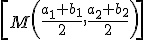

La distancia entre dos puntos, A(a1,a2) y B(b1,b2), es el módulo del vector AB:
La distancia entre un punto y una recta, A(a1,a2) y r:Ax + By + C = 0, es:

La distancia entre dos rectas paralelas, r y s, es la distancia entre un punto en una de ellas y la otra recta: d(r,s)=d(A,s)=d(B,r)
El ángulo entre dos rectas, r y s, es:
Ejemplo:
Las coordenadas del punto medio del segmento AB, donde A(a1,a2) y B(b1,b2), son:

Ejercicios
1.- Calcula el punto medio del segmento AB, donde A(1,1), B(3,8)
2.- Si A(3,3), r: x + 3y + 7 = 0; s: 2x + 6y + 7 = 0; t: 2x - y = 0; calcula:
a) d(A,r)
b) d(r,s)
c) El ángulo entre r y t
Soluciones: 1.- M(2,9/2); 2.- a) 6u; b) 1.1u; c) 98º7'48''